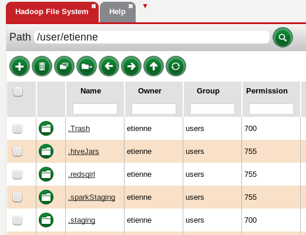
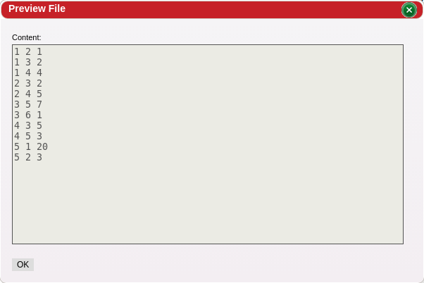

Hadoop File System, accessed by clicking the red drop down arrow next the Help, Canvases, or by creating a new section by dragging a splitter down, presents the files that are on the HDFS (Hadoop Distributed File System). The user can browse the file system and can also view other directories and files given the right permissions. A preview of the files can also be displayed by clicking on the file name.
The permission column uses the unix numeric notation.
 